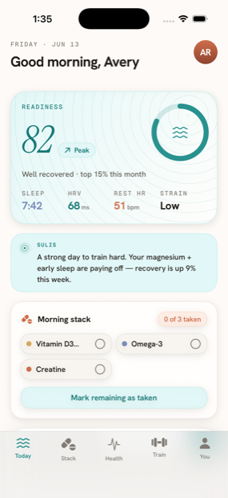
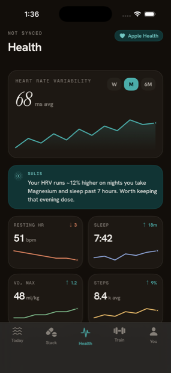
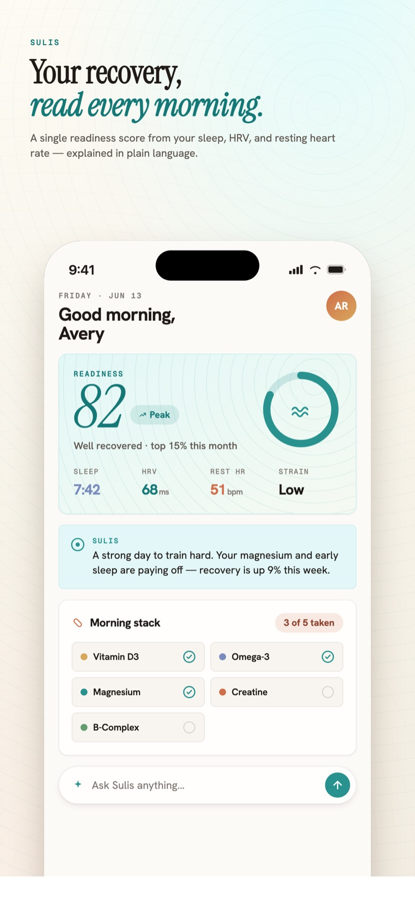
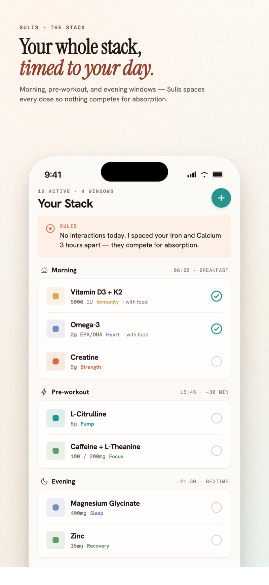
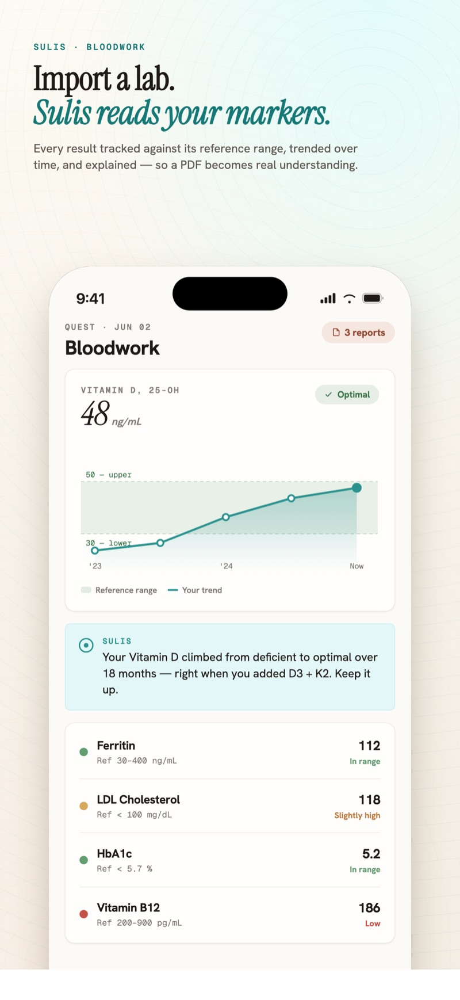
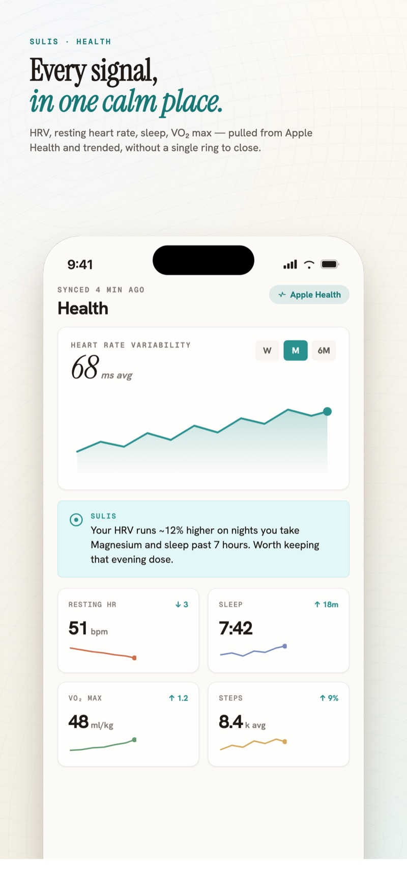
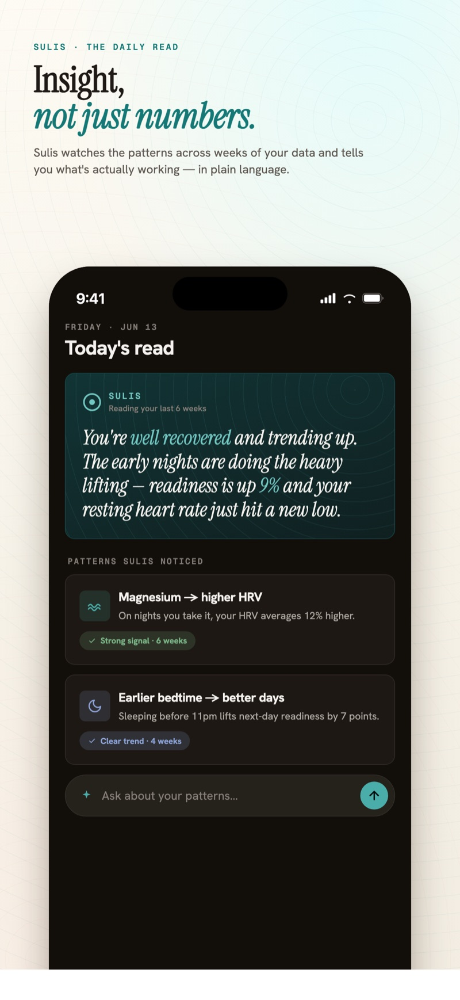
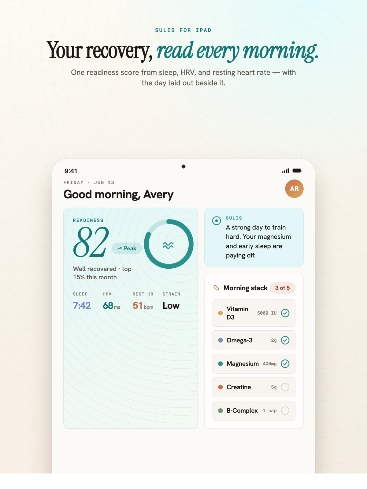
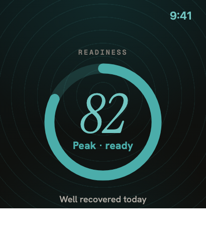

A daily readiness score
Sulis learns your own baselines from HRV, resting heart rate, sleep, respiratory rate, and wrist temperature, then scores your readiness for the day — time‑of‑day aware, never one‑size‑fits‑all.
Sulis quietly unifies your supplements, Apple Health, workouts, recovery, and bloodwork — then writes a plain‑language daily read so you actually know how you are. No rings to close. No guilt. Just clarity.
Free · no account required · your data never leaves your devices


“Your HRV runs 12% higher on nights you take magnesium and sleep past seven hours. I’d keep that evening dose.”
— Sulis, after noticing a pattern across six weeks of your own data
You’re arriving at today well rested. Sleep ran 7 h 42 m with a long stretch of deep sleep, and your HRV sits 9% above its thirty‑day baseline — resting heart rate eased another beat overnight. Tuesday’s tempo run has been fully absorbed; if you were waiting for a day to push, this is it.
One small note: it’s been three days since your last magnesium dose, and your best sleep this month has followed the evenings you take it. Worth restarting tonight. Your vitamin D refill comes due Friday, and the ferritin trend from last month’s bloodwork is still moving the right way — nothing to do there but carry on.
Six quiet capabilities, all feeding one plain‑language read each morning.
Sulis learns your own baselines from HRV, resting heart rate, sleep, respiratory rate, and wrist temperature, then scores your readiness for the day — time‑of‑day aware, never one‑size‑fits‑all.
A short, plain‑language note on how you are and why — running on Apple Intelligence on‑device, or with your own Claude key. Insight only when it matters, never noise.
Track everything you take, schedule doses around your training and sleep, get gentle reminders, and see interaction flags — all folded into the same readiness picture.
Import your lab PDFs and Sulis reads the markers for you, canonicalizes the names, tracks trends over time, and shows where each value sits — in language a human can follow.
Connect Apple Health, Apple Fitness, Oura, and WHOOP. Workouts, recovery, steps, VO₂, and nutrition flow in automatically — including a companion Apple Watch app.
Your data lives on your device and syncs only through your own iCloud. No accounts. No tracking SDKs. No servers of ours collecting your health data. Free, with no in‑app purchases.
Set it up once in about two minutes, then let it run in the background.
Warm mineral surfaces, generous space, and a single spring‑teal accent — the same care, on every screen.







Free, with no account required and no in‑app purchases. Connect your health data and meet your spring in under two minutes.